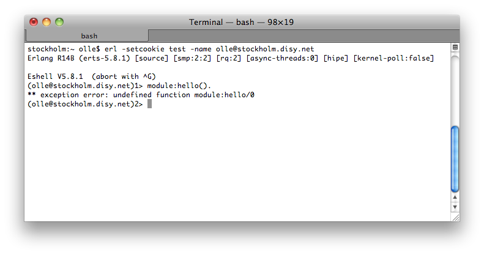
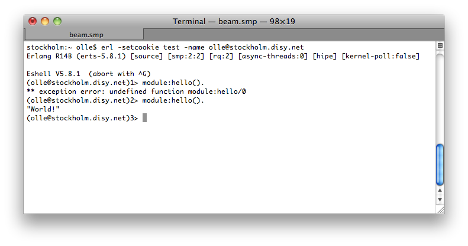

Uploading application project code on a remote node
This example will show how to upload the code of an application project (and its dependencies) on a running remote erlang node.
First of all you'll need an already setup application project with packaging erlang-otp or erlang-std. For this demo we have a a trivial application project named app with the test module module.erl. The content of the test module is listed below:
-module(module).
-export([hello/0]).
hello() ->
"World!".Now we're starting a node on the remote host stockholm. module is not available on the remote node yet.

Next step is to execute the upload mojo of the plug-in on the machine the application app resides. In this case this would be tirana.

That seemed to work! Now see what the remote machine has to say about that.

As you can see the compiled code has been uploaded and is now available on the remote node. The upload mojo will behave similar to a call to c:c/1 on the remote node. Uploading the code twice will kill all processes running an old version of module.
In case of application with dependencies to other applications the parameter -DwithDependencies could be useful, since it will also upload the modules of the projects dependencies.
Please note that resource files will not be uploaded by this mojo since we would need write access to the remote node's installation directory in order to do so. Uploading code will not persist those modules on the remote node.